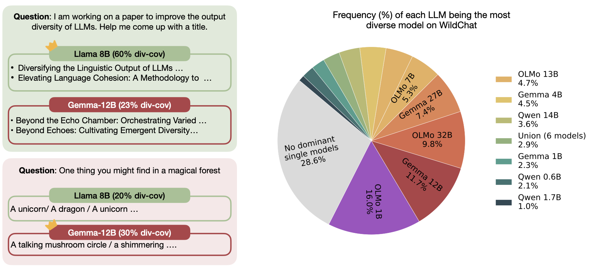
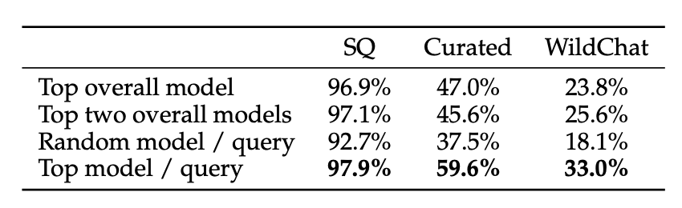
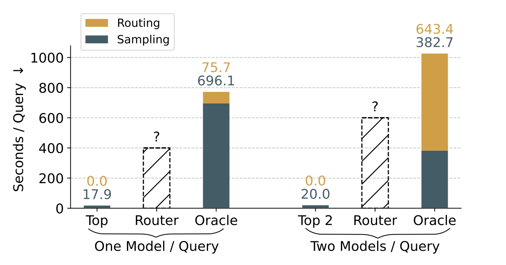
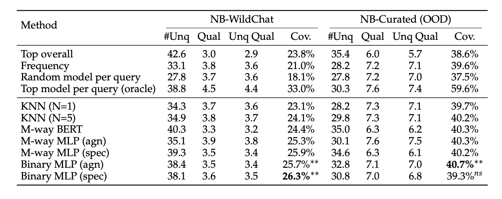
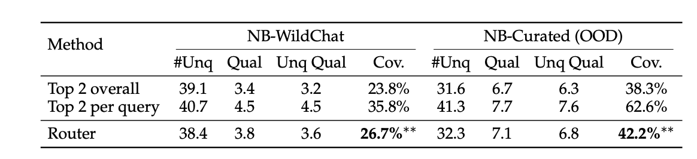
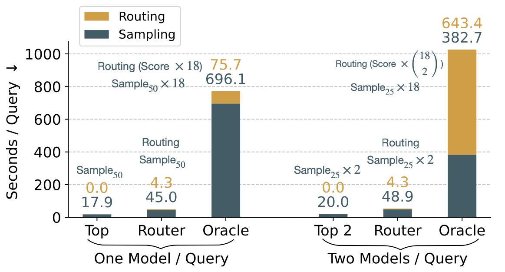

How Do We Measure Diversity?
We want to evaluate how diverse a set of generated answers is for a given question. We assume two primitives:
- $\operatorname{uniq}(q, A)$ — the number of distinct answers in set $A$ to question $q$.
- $\operatorname{quality}(q, a_i)$ — the quality score of a single answer $a_i$ to question $q$.
From these, we propose the Diversity Coverage metric: it calculates the total quality scores assigned to all unique answers in a predicted answer set, relative to the best possible answer set of the exact same size. A score of 100% means the model's outputs are as diverse and high-quality as possible.
We define max-uniq-sum(q, B) as the maximum score achievable by generating an answer set of size B where every answer is distinct and achieves maximum quality.
Motivation: No Single Model Dominates
Different language models excel at generating diverse answers for a disjoint subset of questions. The figure below shows how the best-performing model differs: A model is only considered to be the best model if its diversity scores are 5% higher than the second most best candidate.

Figure 1: Distribution of the best model per query across 1k NB-WildChat prompts.
Leaderboard: Which model wins for each question?
For each of NB-WildChat questions, we sampled 50 generations from each of 18 models and computed their diversity coverage.
Oracle Router Improves Diversity A Lot
Assuming access to the diversity coverage scores of all LLMs on all queries, an oracle router outperforms using random models, one single best model, or even two fixed best models.

Figure: Diversity coverage scores on Simple Questions (SQ), NB-Curated (Curated) and NB-WildChat (WildChat)
However, the Efficiency Cost for Oracle Router is ...
Much higher. To obtain oracle labels in practice, you would need to:
- Run all 18 models on every question, and
- Sample 50 generations each — a total of 900 samples per query.
Alternatively, you could stick to overall best model (Top baseline, computed on some known set of queries) — but the diversity is suboptimal. The efficiency plot below illustrates this trade-off. Is there a middle ground?

Figure: Efficiency vs. performance trade-off for the oracle and top overall strategies.
💡 Can we train a router that predicts the best model per question — without running all 18 models?
Learning a Router: Method & Main Results
We formulate router training as a classification problem over the question. We explore two formulations:
- M-way classification — predict a single best model among all M candidates directly.
- Binary classification — for each model independently, predict whether it is the best model for the given query.
We find that binary routers with model-specific query encodings bring the greatest gains (26.3%), surpassing the Top overall baseline (23.8%). This gain also generalizes to out-of-domain queries(NB-Curated).

Figure: Main results. A per-query router selects over 18 models to maximize diversity coverage (Cov.).
Selecting Two Models per Question
The router can also be extended to choose the 2 models per question, which further improves diversity coverage.

Getting Back to Efficiency
It seems we find a good middle ground. We analyze the end-to-end latency of our routing approach, comparing it against oracle and top overall baselines. The latency is measured by the actual model selections on the test split of NB-WildChat.

Figure: Efficiency analysis comparing the time (seconds per query) across routing (Router), Top overall (Top) and Top model per query (Oracle). Sample$_n$ denotes sample n answers.
Citation
If you find this work useful, please cite:
@article{liu2026no,
title={No Single Best Model for Diversity: Learning a Router for Sample Diversity},
author={Liu, Yuhan and Xu, Fangyuan and Padmakumar, Vishakh and Ippolito, Daphne and Choi, Eunsol},
journal={arXiv preprint arXiv:2604.02319},
year={2026}
}